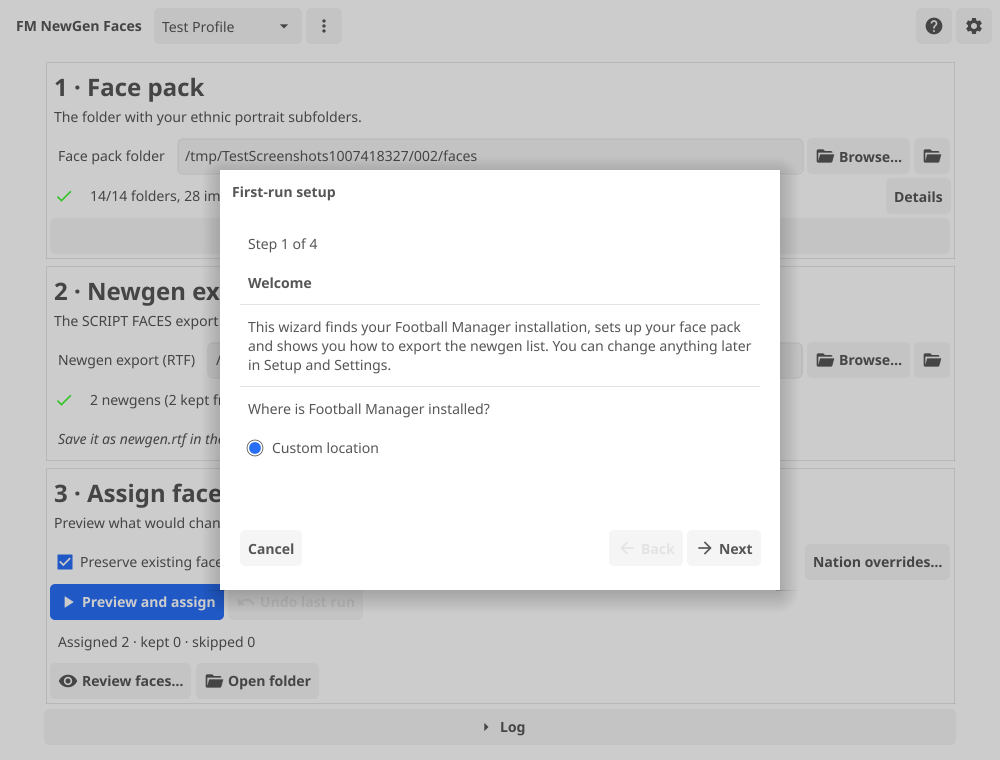
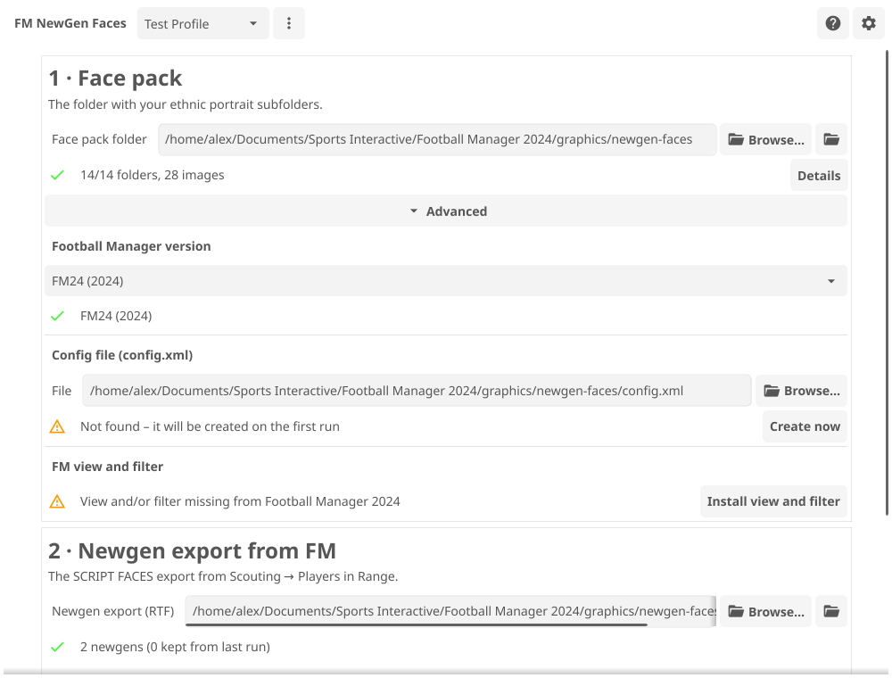
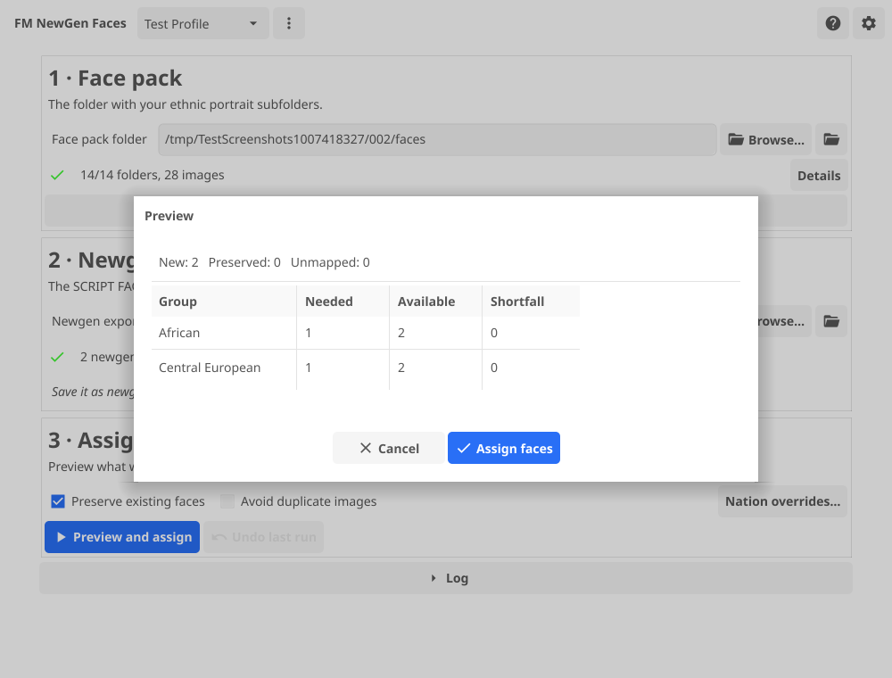
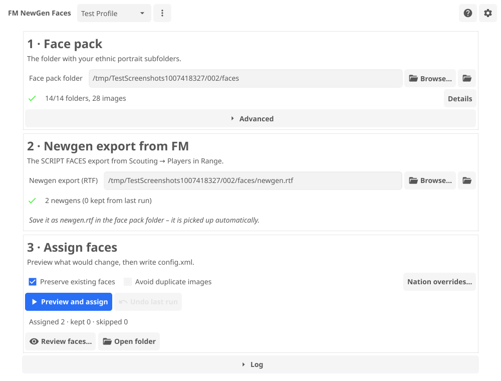
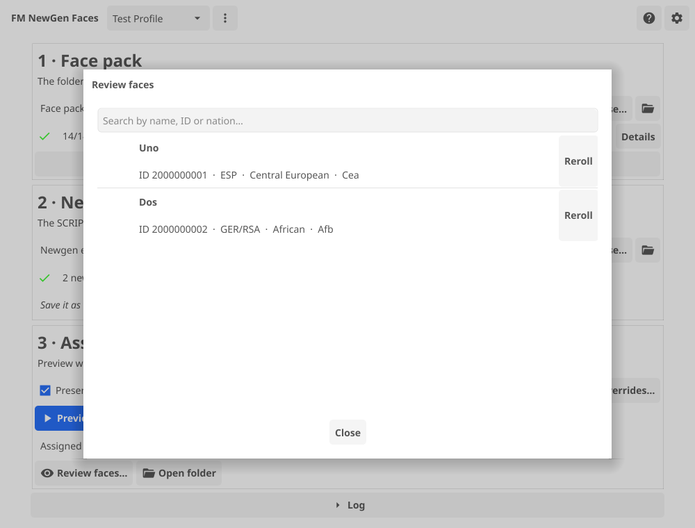
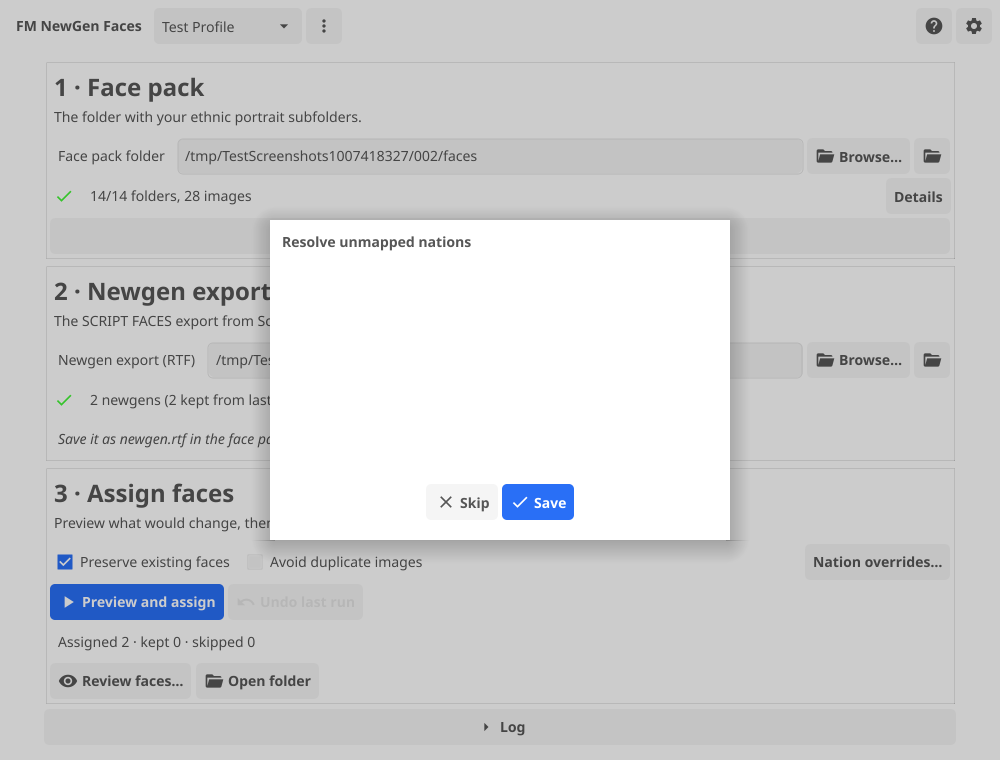

Home / Guide
User guide
Everything from installing FM NewGen Faces to running it every new season: face pack setup, exporting the newgen list from Football Manager, assigning faces, reviewing them, and undoing a run if you need to.
Requirements
- Football Manager FM20–FM24 (an FM24 save uses the newer
r-<id>portrait naming; FM20–FM23 use the bare newgen ID – FM NewGen Faces handles both automatically from the version you pick). - A newgen face pack that uses the 14 standard ethnic folders (a NewGAN-style pack). FM NewGen Faces does not generate faces itself – it assigns portraits from a pack you already have.
- Windows, macOS or Linux. No installer, no admin rights, no dependencies beyond what's listed under Install for your OS.
Install
Download the archive for your OS from the home page or the releases page, extract it anywhere, and run the app inside. It is a single executable – nothing else is installed on your system.
Windows
Extract the zip and double-click fm-newgen-faces.exe (the zip also contains fm-newgen-faces-cli.exe, the same tool for the command line). Because the app isn't code-signed with a paid certificate, Windows SmartScreen may show "Windows protected your PC" the first time. Click More info, then Run anyway. This only appears once per download.
macOS
Extract the .tar.gz; inside is a single executable, fm-newgen-faces, which you can keep anywhere (e.g. a folder in Applications). It is not notarized by Apple, so the first double-click is blocked with "cannot be opened because the developer cannot be verified". Right-click (or Control-click) fm-newgen-faces → Open, then confirm Open in the dialog. After that it opens normally. Alternatively, in Terminal: xattr -d com.apple.quarantine fm-newgen-faces.
Linux
Extract the .tar.gz, then make the binary executable and run it:
tar xzf fm-newgen-faces-linux.tar.gz
chmod +x fm-newgen-faces
./fm-newgen-facesThe GUI is built with Fyne and needs a working OpenGL/X11 (or Wayland via XWayland) stack – the same graphics libraries most desktop Linux systems already have for any GTK/Qt app (X11, GL, and friends). If the window fails to open, install your distribution's equivalents of libgl1, libx11-6, libxcursor1, libxrandr2, libxinerama1, libxi6 and libxxf86vm1. The command line works everywhere without a display.
Install a face pack
A face pack is a folder with 14 subfolders, one per ethnic group, full of portrait images:
African, Asian, Caucasian, Central European, EECA, Italmed, MENA,
MESA, SAMed, Scandinavian, Seasian, South American, SpanMed, YugoGreekExtract your face pack anywhere under your FM graphics folder, for example:
Documents/Sports Interactive/Football Manager 2024/graphics/newgen-faces/Point FM NewGen Faces at that top-level folder (the one containing the 14 subfolders), not at one of the subfolders. The 1 · Face pack card checks it live and reports per-folder image counts, missing or empty folders, ignored files and any nested folders before you run anything.
First start
On first launch, FM NewGen Faces scans your system for Football Manager installations (Documents, OneDrive, and Steam Proton/Heroic prefixes on Linux) and creates one profile per installation it finds. A first-run wizard then walks you through picking your Football Manager install, choosing your face pack folder and exporting the newgen list, and links to the tutorial video along the way.

You can always change the face pack folder, newgen export path, config.xml location or Football Manager version later from the main window or its Advanced section.
Export the newgen list from FM
FM NewGen Faces reads your newgens from a text export you print from inside Football Manager. Do this once per run (e.g. once per season):
- In Football Manager, go to Scouting → Players in Range.
- Import the view SCRIPT FACES player search.
- Apply the filter is newgen search filter.
- Select all players (Ctrl+A).
- Print to a text file (Ctrl+P) and save it as
newgen.rtfinside your face pack folder.
FM NewGen Faces installs that view and filter into every Football Manager installation it finds (into <FM user folder>/views and <FM user folder>/filters), so they simply appear in FM's import list – you don't need to build them yourself. If your FM install is in a custom location, install them manually from the 2 · Newgen export from FM card's "How to export" action, or the checklist's fix-it button.
newgen.rtf directly inside the face pack folder. The app watches that folder and notices the new export automatically – no need to browse to it by hand.The Advanced section under the face pack card lets you set the Football Manager version and the config.xml path by hand, and shows whether the view and filter were installed automatically or need a manual copy for a custom FM location:

Preview and assign
Once the face pack and the newgen export are both detected, the 3 · Assign faces card lights up. Click Preview and assign to see the plan before anything is written:

- New – newgens that will get a face for the first time.
- Preserved – newgens that already have a face and will keep it (see below).
- Unmapped – players whose nation couldn't be resolved to an ethnic group; see nation overrides.
- Shortfall – when a group needs more faces than the pack has available images for (with duplicates avoided).
Two checkboxes control how the run behaves:
- Preserve existing faces (on by default) keeps every newgen that already has a mapping in config.xml and only assigns faces to newgens that don't have one yet. Turn it off to reassign everyone, including players who already have a face.
- Avoid duplicate images excludes images already in use elsewhere in config.xml before drawing a face, so the same portrait isn't reused for two different players.
Click Assign faces in the preview to write config.xml. The previous file is backed up first (see Undo and backups), and a summary shows how many players were assigned, kept and skipped:

Make FM show the faces
Football Manager caches portraits, so it won't pick up the new config.xml until you clear that cache. In FM, go to Preferences → Interface and choose Clear Cache and Reload Skin (or simply restart Football Manager). The new faces then show up in-game.
New season / new intake
Whenever a new youth intake arrives, export the newgen list again (see above) and click Preview and assign once more. With Preserve existing faces on (the default), only the newly generated players are missing a face and get one – everyone who already had a portrait keeps it, so re-running is safe and fast every season.
Review and reroll
Click Review faces… after a run to see every assigned face in a searchable table – name, ID, nation(s), ethnic group and the image used. Search by name, ID or nation, and click Reroll next to any player to swap in a different face from the same ethnic group if you don't like the one that was picked.

Undo and backups
Every time FM NewGen Faces writes config.xml, it first keeps a timestamped copy of the previous version. Click Undo last run in the app to restore the most recent backup for the current config.xml, or use fm-newgen-faces restore from the command line to list or restore any backup, not just the latest one.
Backups (along with profiles, app state and the log file) live under the app's config directory:
| OS | Location |
|---|---|
| Linux | ~/.config/fm-newgen-faces |
| macOS | ~/Library/Application Support/fm-newgen-faces |
| Windows | %AppData%\fm-newgen-faces |
Backups are kept per config.xml path, under a backups subfolder there.
Nation overrides
FM NewGen Faces maps each player to one of the 14 ethnic groups using Football Manager's own ethnicity value together with the player's nation(s). If a nation code isn't in the built-in table, that player shows up as unmapped instead of blocking the whole run:

Open Nation overrides… from the 3 · Assign faces card to add or edit overrides at any time, or import/export them as a block of TOML, e.g.:
[mapping_override]
AFG = "MESA"
ENG = "Caucasian"Overrides are saved per profile and apply to every future run for that profile.
Profiles
A profile stores one face pack folder, newgen export path, config.xml path, Football Manager version, run options and overrides. FM NewGen Faces creates one profile per Football Manager installation it detects, and auto-selects the right one when you switch face pack folders. Use the profile switcher in the header to create, rename or delete profiles, or re-run the first-run wizard for the current one.
Keyboard shortcuts
| Shortcut | Action |
|---|---|
| Ctrl+R | Run (preview and assign faces) |
| Ctrl+O | Choose the face pack folder |
| Ctrl+L | Toggle the log panel |
| Ctrl+Q | Quit |
On macOS, use Cmd in place of Ctrl.
Stuck on something? Check the FAQ, or see the command-line reference to script the whole pipeline.